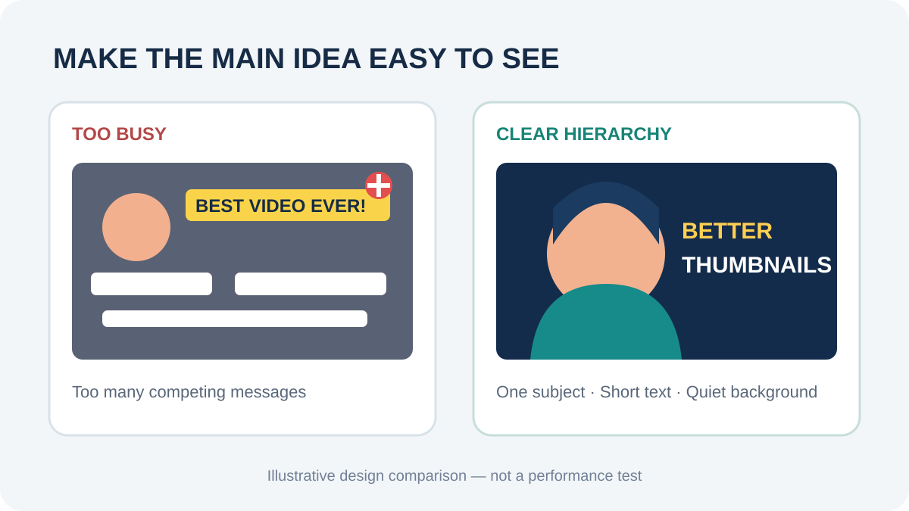
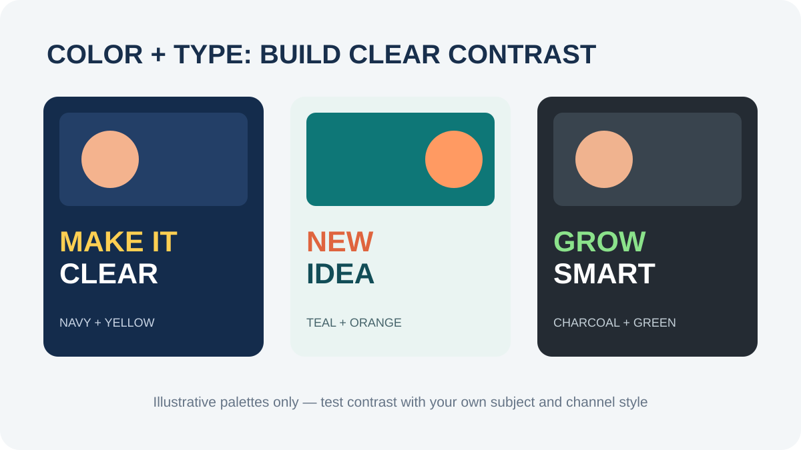

1. Why thumbnails matter for discovery and viewer expectations
On Home, Suggested and Search surfaces, a thumbnail is one of the first visual cues viewers use to decide whether a video is relevant. YouTube Analytics reports impressions and impressions click-through rate (CTR), but CTR is not a score that can be judged in isolation. It varies with traffic source, audience, topic, reach and how widely a video is being shown. A high CTR does not guarantee strong watch time or recommendations.
- Create instant clarity: help viewers recognise the subject, emotion, comparison or outcome at a glance.
- Set honest expectations: make sure the video delivers what the title and thumbnail promise. If the packaging attracts the wrong audience, viewers may leave disappointed.
- Read performance in context: compare CTR with impressions, traffic source, average view duration and audience retention over a meaningful period.
2. Follow a simple visual hierarchy
One common beginner mistake is trying to fit several sentences, icons and background details into a small rectangle. A useful starting point is to build the design around three roles—not a rigid rule that every thumbnail must contain exactly three objects.
- One focal subject: an expressive face, a product, a clear result, a recognisable object or a meaningful scene.
- Short supporting text: often two to four words when text adds context or curiosity. It should complement the title rather than repeat it word for word.
- A quiet background: use blur, darker values, negative space or a controlled color contrast to separate the subject from surrounding detail.
Give the most important element the strongest size, contrast or placement. Secondary information should be visibly less dominant. If a logo, arrow, badge or decorative icon does not clarify the video idea, remove it.

3. Use color contrast with purpose
Color can guide attention, create separation and establish a recognisable channel style. There is no universal color combination that guarantees a higher CTR: contrast, subject, topic, audience and surrounding YouTube interface all influence how a design is perceived.
Color combinations worth testing
- Dark or desaturated background with a bright subject: can help a face or product stand out, especially when the subject is well lit.
- Light text on a dark field: white or warm yellow text on navy, charcoal or deep blue can remain readable at small sizes when contrast is strong.
- Complementary accents: teal and orange, deep navy and yellow, or charcoal and bright green can create separation. Use one accent as a highlight rather than filling every area with saturated color.
Think about the image as a whole: skin tones, product colors, brand palette, background and the light/dark balance. Avoid relying on color alone to communicate meaning; text and shape should still make the idea clear for viewers with color-vision differences.

Photography tip: If you plan a dedicated thumbnail portrait after filming, capture a few intentional expressions and poses. A soft key light and subtle edge separation can help the subject read clearly. Keep the background and skin tones natural rather than over-processing clarity or saturation.
4. Choose typography that reads quickly
Thumbnails often appear small on phones, so thin, condensed or decorative type can become difficult to read. Choose a bold sans-serif face with clear letter shapes and enough spacing. Fonts such as Montserrat ExtraBold, Poppins Bold, Bebas Neue, Impact and Anton are examples to test; check font licensing and the tone of your channel before using them.
- Keep text brief: two to four words is a useful starting point, not a mandatory limit. Use only the words that strengthen the idea.
- Create separation: a restrained shadow, outline or solid backing shape can help letters stand apart from a busy image. Avoid thick effects that make the type look muddy.
- Build a clear type scale: one main phrase should dominate. Small labels are optional and should remain readable.
- Protect important content: keep key words and faces away from the lower-right area where the video duration badge commonly appears. Preview the design in the actual YouTube surfaces you use.
For example, a video titled “How to Start a Professional Video Podcast in 2026” might use a short thumbnail phrase such as “STUDIO SETUP” or “BETTER PODCAST AUDIO”. The title gives detail; the thumbnail supplies a quick visual cue.
5. Technical specifications and the mobile-first test
Export a crisp image and check the current upload limits for the device and thumbnail type you use. YouTube's current Help guidance recommends a large image, 16:9 for standard video thumbnails, JPG or PNG, and a minimum width of 640 pixels. It recommends 3840 × 2160 pixels for video thumbnails where practical. Upload file-size limits differ by device: the current guidance lists mobile limits of 2 MB for video thumbnails and 10 MB for podcast thumbnails, while desktop uploads can be up to 50 MB.
| Specification | Practical guidance |
|---|---|
| Standard video aspect ratio | 16:9 widescreen |
| Recommended resolution | 3840 × 2160 px; minimum width 640 px for standard video thumbnails |
| File formats | JPG or PNG are the formats listed in YouTube Help |
| Upload size | Mobile: up to 2 MB for video thumbnails / 10 MB for podcast thumbnails. Desktop: up to 50 MB for video, Shorts and podcast thumbnails |
| Podcast playlist artwork | Use a square 1:1 image rather than the standard 16:9 video layout |
Specifications can change and may differ by upload surface. Check YouTube's custom thumbnail guidance before exporting. The mobile file-size limit is especially important if you upload directly from a phone.
The small-screen check
Before publishing, zoom out or preview the design at the size viewers will actually see. Ask yourself:
- Can I recognise the topic or subject in about a second?
- Can I read the main phrase without squinting?
- Does the image make an accurate promise that the video fulfils?
- Is the focal subject still clear when the thumbnail is viewed small?
If any answer is no, simplify the composition, enlarge the main subject or improve the text/background contrast.
6. Common thumbnail mistakes that weaken the design
- Repeating the full title: use the limited visual space to add a complementary cue instead of duplicating every word.
- Using blurry frame grabs: motion blur, awkward expressions and poor focus can make a thumbnail look unplanned. Capture a dedicated still or use a sharp frame when appropriate.
- Adding too many visual clues: multiple arrows, circles, logos and paragraphs compete for attention.
- Using inconsistent branding: completely different fonts and colors on every upload can make it harder for returning viewers to recognise your channel. Build a flexible design system, not identical thumbnails.
- Overpromising: avoid fake results, misleading reactions or imagery that the video does not support.
7. Test thumbnail ideas with YouTube Studio
Where the feature is available to your channel, YouTube Studio's Test & Compare can test up to three thumbnail options. YouTube evaluates the test using watch time, not simply the highest click-through rate, and may select the option or title-and-thumbnail combination that generated the highest watch time. Availability has eligibility and format restrictions; YouTube currently says the tool is available on desktop for eligible channels and does not support Shorts, scheduled Lives or Premieres during the test.
Make each variation meaningfully different—such as a different focal image, text treatment or composition—while keeping the underlying video and promise consistent. Allow the test to run, then use the result as evidence for future design decisions. A test result is not a guarantee that the same style will work on every topic.
Read the official instructions: A/B test titles and thumbnails in YouTube Studio.
Frequently asked questions
Should I always put my face on a YouTube thumbnail?
No. Faces can help personal brands, commentary, education and storytelling because expressions communicate emotion quickly. For software tutorials, product comparisons or design breakdowns, a clear image of the object or result may explain the topic better.
How can I test which thumbnail performs better?
Eligible channels can use YouTube Studio's Test & Compare on desktop to compare up to three thumbnail options (and, where selected, title combinations). The winner is determined by watch time rather than CTR alone. Check the feature's current eligibility and supported formats in YouTube Help.
Should I design the thumbnail before or after shooting?
Plan the title and thumbnail concept before filming so you know what visual promise the video needs to deliver. Capture dedicated thumbnail photos during or after the shoot, then finish the design once you have the strongest image and final video context.
Build stronger YouTube packaging
Strong thumbnails combine a clear idea, thoughtful photography and disciplined visual hierarchy. Keep the design honest, test readability on mobile screens and learn from watch time and retention—not from CTR in isolation.
Creator Support Amravati supports creators, educators and brands with thumbnail design, studio shoots, multi-camera production, video editing and YouTube SEO. Explore our Video Editing and Graphic Design services, or contact our team to plan your content workflow.
Continue learning: How to Start a YouTube Channel in 2026 and Professional Video Podcast Studio Setup Guide.